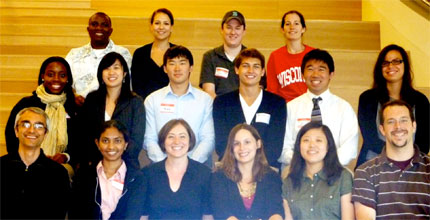
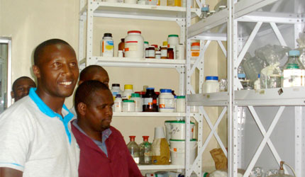

News Archives : 2009 : Harvard Students to Help 3500 Fellow Scientists in Kenya this Fall
by Nina Dudnik
October 16, 2009

Leaders from Seeding Labs chapters at Harvard University, Harvard Medical School, Boston University and Yale Medical School met in September to plan for the shipment to Kenyatta University.
Graduate students at Kenyatta University in the Plant Transformation lab are working on developing better varieties of local crops like pigeonpea and cassava for use by Kenyan farmers.
Quick - look at that old piece of equipment gathering dust on the end of your bench, in the corner of the room, or sitting up on the highest shelf. Think it's not useful anymore? Well, think again. That older piece of equipment that you no longer use might be just the thing that a scientist somewhere else in the world desperately needs. And this fall you can ensure that it gets to that scientist, by giving it to Seeding Labs.
Started in 2003 by graduate students at Harvard, Seeding Labs is a nonprofit organization whose mission is to support and expand scientific research in developing countries by providing affordable reclaimed laboratory equipment and facilitating connections with the global scientific research community. Seeding Labs has already equipped 22 labs in 13 countries in Latin America and Africa, making $400,000 worth of equipment available to scientists working on issues ranging from dengue fever to HIV to tuberculosis.
These accomplishments have relied on the outreach and hard work of volunteers at Harvard, including students and post-docs in MCB labs. This fall, they are part of a multi-sector effort to help scientists in Kenya get their labs up to world-class levels.
This past April, Nina Dudnik, Harvard alumna and the Executive Director of Seeding Labs, met with the administration of Kenyatta University (KU) in Nairobi, Kenya. The faculty and growing student population of KU is eager for new tools and global collaborations. The departmental faculty in Chemistry and Pharmacy filled out intensive surveys detailing their current research and curricula, and the equipment they need to improve teaching and research. Some of this equipment will be donated by biotechnology companies in the Boston area - the surplus of their advanced research programs.
You too can contribute. Visit www.seedinglabs.org to see what equipment is needed for our colleagues in Kenya. Microscopes, glassware, balances and stir plates supplies are especially needed. If you have equipment to donate, contact the Harvard FAS chapter of Seeding Labs at hcslo@seedinglabs.org. Student volunteers will coordinate a time to pick up your equipment and they will make sure it gets carefully packed for shipment to the 3500 students in Kenya who are waiting eagerly for it. Just think -you can ensure the education of thousands of students, just by giving us your old equipment!